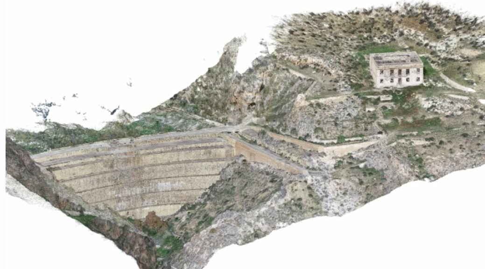
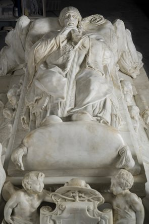
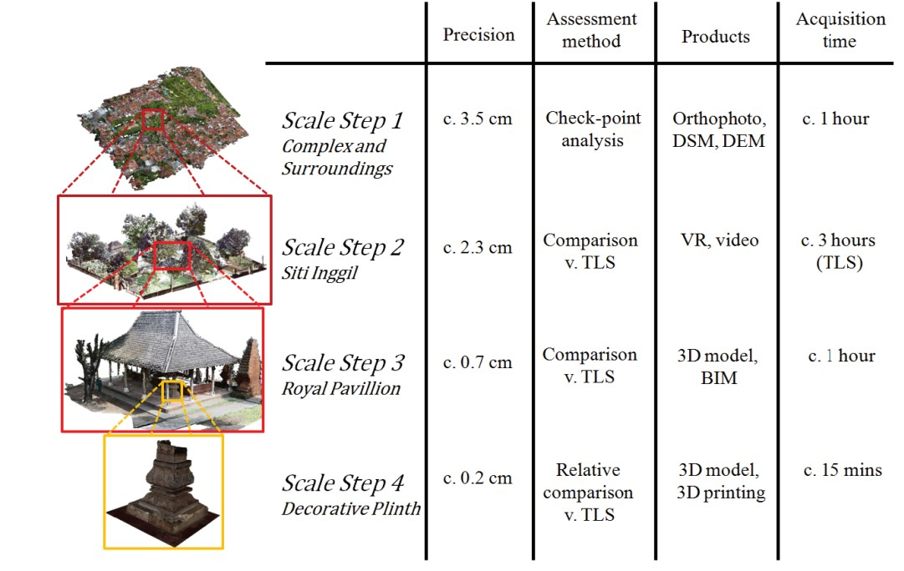

Photogrammetry
Overview
Photogrammetry is is a type of 3D scanning approach. This technique employs 2D images to create a 3D model of an object or surface. It involves taking hundreds of overlapping photographs of an object from many different angles and processing them using specialised software. Photogrammetry is special way to obtain 3D information in situations where it is not possible to use 3D scanners (inaccessible locations, conflict zones), or when high-speed recording is required (scanning people, living organisms, liquids in movement). This technique is suitable for the quick recording of vulnerable and inaccessible sites. Also, it is ideal for the recording of translucent surfaces like alabaster and marble.
Long-range or ‘aerial’ photogrammetry was developed in the 19th and 20th centuries as a cartographic tool to produce three-dimensional maps of the surface of the earth. In the 21st century, advancements in computer processing power have resulted in the rapid growth of close-range photogrammetry, which can be used to capture both the shape and fine surface detail of objects.
The photogrammetry technique has a number of advantages over traditional 3D scanning technologies, including the possibility of recording color information at the same time as 3D data. In most cases, the equipment (camera, tripod, flashes) can fit into a small camera bag, making it a particularly useful tool for recording at remote or dangerous sites.
The ways that photogrammetry comes to life can vary widely by collection method, data gathered, industry use and compatible technologies.
Photogrammetry makes its mark in an array of industries. Photogrammetry is commonly used in:
As technology continues to advance, the applications of photogrammetry are likely to expand even further.
In order to make a 3D model a camera takes multiple images with overlap of the surface of the object. The images are then processed to create a digital 3D model for various applications. This process can get complex, but it all comes down to the concept of triangulation. Triangulation involves taking pictures from a minimum of two different locations. These pictures create lines of sight that lead from each camera to specific points on the object being photographed. The intersection of these lines plays into mathematical calculations that help produce 3D coordinates of the specified points.
Photogrammetry software works by identifying common features on an object's surface across multiple images. Each of these ‘features’ can be described in 3D space by a series of coordinates (x, y, z). A grouping of such points is called a ‘point cloud’. During post-processing, the points are also connected to one another by lines (triangulated) and conjoined with flat planes to produce a 3D model. By applying digital colour management methods during a recording session, it also becomes possible to simultaneously obtain both 3D and accurate colour information about the surface of an object.
Photogrammetry is a fundamentally democratic technology: it can be done by anyone with a phone camera and access to free photogrammetry software. However, in order to produce the kind of high-resolution 3D models that accurately capture the geometry and surface detail of an object, a high level of skill is required for both data recording and data processing. [FactumArte_1]. So far, in Photogrammetry, commercially available cameras or custom designed scanner systems (e.g. Selene Photometric Scanner, Nub3D Sidio white light scanning system) as well as specialized software (such as RealityCapture (RC) or Agisoft PhotoScan) are used.
Basic processing is required in the field to ensure that no areas have been missed. Post processing using specialised software is time consuming.
The data can be collected from a tripod, a vehicle or from the air. Aerial photogrammetry uses satellite, commercial aircraft or drone to collect images of buildings, structures and terrain.
The long- and close-range photogrammetric recording is usually being coupled with drone technology to facilitate the documentation of large cultural heritage sites – operators are able to photograph at heights and angles otherwise impossible to reach without scaffolding.
Case Studies
| Scanned Object | Scanning Method | Source |
|---|---|---|
| Isabel II dam in Níjar, Almería, Spain |  | [Martínez-Carricondo_2021] |
| Facsimile of the Tomb of Cardinal Tavera, Hospital Tavera, Toledo, Spain |  | www.ingenia.org.uk |
| Kasepuhan Palace site, Cirebon, Indonesia |  | [Murtiyoso_2018] |
Acknowledgements: [Boardman_Bryan_2018], [takeoffpros_2020], [wiki], [3D_2006], [3D_2023], [FactumArte_1], [cyark].